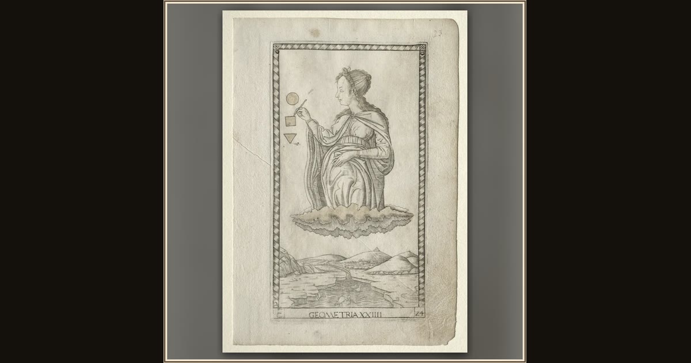

Geometry (from the Tarocchi, series C: Liberal Arts, #24)
Master of the E-Series Tarocchi (Italian, active 1460s) · before 1467 · cma
An engraved personification of Geometry points toward a circle, square and triangle; Socrates names geometry as the next study after arithmetic in the guardians’ education (526c). Explore its place in Plato's Republic, Book VII, section 61.